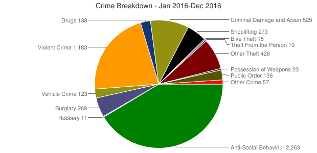

Redruth is a small seaside town within Cornwall. Once home to a large mining industry, the town has been transformed into a tourist resort with many different attractions. See the attractions segment for more information.
Redruth has a population of around 14,000, and has many interesting museums that have been converted from the abandoned mines that are scattered over the town. For more information about a few of the mines within Redruth, see the mines segment.
The history of Redruth is a long and interesting one. Originally, it was a small market town that was mostly ignored due to it's larger neighbors. Once there was a boom in the ore industry at the start of the industrial revolution, everything changed. The copper ore that was found all over Redruth was suddenly vauable, and the population and wealth of the area exploded with the new found popular resources that seemed to be everywhere. Wealthy businessmen set up mines around Redruth in order to mine the copper to feed the machines of the industrial revolution, and the population of Redruth benefitted greatly from this. Previous mines were also used from previous business ventures from back when Redruth and the surrounding area was used for tin mining businesses. The high need for copper was driven by the large quantities of brass that had to be manufactured, the key component of which is copper. While the buninessmen who owned the mines became rich and successful, the miners and their families remain poor, ironically.
During this time, the town started to develop itself around the mining industry. In 1882 a School of Mines was created to help educate a new generation of miners. Another key mining feature that was added during the late 1800 was the Mining Exchange, which was used to trade mineral stocks. The industrial revolution that helped reboot the mining industry was helping the town have a new lease of life. Sadly this didn't last long, and by the end of the 19th century, the mining industry had moved away from the Cornwall area due to a decline in resources, plunging the town into a spiraling into a depression as there was lots of mining equipment that was no longer being used. Also, due to the fact that all of the current population were either in the mining business or were being trained to work in the mines, they were now in redundent positions in jobs that were no longer availible. Because of this, many people emigrated to other countries that were more mining speicalised, such as the Americas, Austalasia and South Africa. The final operational mine near Redruth was also the last to be closed in all of Cornwall. The South Crofty mine in Pool closed in the first few months of 1998, effectively ending an era.
Oddles of fun.
Cornwall has loads of fun things do to, and Redruth even moreso! Take a look at some of the things you can do below!
Museums and Tours.
As aforementioned, a large amount of Redruth's history is compromised of the large scale mining industry. Because of this, there are many fun and interesting abandoned mines that have been converted into museums and exhibitions. This means that you can learn more about the culture surrounding Redruth and the Cornish mining industry, including the impacts on the local area and the rest of the world.
Rest Easy.
Redruth has a relatively low crime rate, as you can see in the graph below which depicts the crime statistics for 2016.
Click the image for a higher resolution. 
Learn About Learning.
As aforementioned, a large amount of Redruth's history is compromised of the large scale mining industry. Because of this, there are many fun and interesting abandoned mines that have been converted into museums and exhibitions. This means that you can learn more about the culture surrounding Redruth and the Cornish mining industry, including the impacts on the local area and the rest of the world.
Relaxing Times.
Redruth has three incredible beaches with loads of things to do. All of these beaches have good surf and seasonal lifeguard support.
The following is an interactive map of Redruth, supplied by Google Maps.
The following are some questions that are normally asked about Redruth.
This website is owned by Nathan Windisch on behalf of the Redruth Council in Cornwall, UK. Please redirect all questions about the area to Redruth Council and please redirect any mistakes, faults or web design questions to the Site Administrator.
{kind=link}